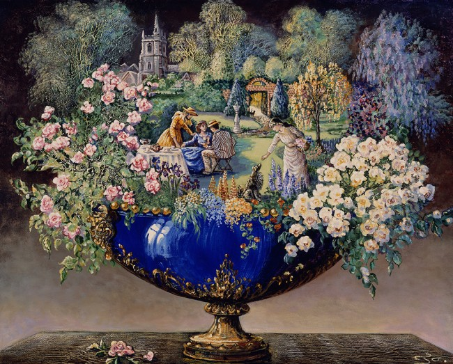

Duality Box Reflection
Inspiration
For me, fantasy is a big aspect of who I am. I love to believe that magic and fairy tales exist, and I also know that some people are true believers of the opposite. I wanted to challenge that belief and create a project that would showcase a situation in which they could live and prosper together. Josephine Wall, an artist from the United Kingdom, makes a lot of surreal paintings that all inspired this project. This painting perfectly embodies the notion that everything may seem as “reality”, but is really fantastical.
Composition
I made the sides of the house curved so that I could explore how the different stages of clay responded to being constructed with slabs. The book as the lid is used to further demonstrate both fantasy and reality, as they can be of both genres. The house being curved in makes it appear old and aged, as what would happen to a real house because of time and what a house in a fantasy world might look like because of architectural style.
Principles and Elements of Design
Principles of Design
Proportion and scale was achieved well most notably in the scale between the size of the house and the size of the book. In some fairy tales the house is much smaller than one would think, such as the story where a shoe is used as a house. There was contrast between the perfect string lights on one side and the ones that were falling off on the other. One principle that I would have liked to push further was rhythm and movement.
Elements of Design
Line was achieved through my use of a small piping tool that allowed me to draw slip onto the piece. I wanted to place a lot of lines on my piece as I felt that it would contribute to the look of it being a gingerbread house. Space was also achieved well through my use of cutting out windows into the clay. I wanted to invite the viewer to view both the inside and outside, and this allowed me to do that. One element that I could have pushed further was texture.
Glaze
Christmas is known to be red and green because red represents the blood that Jesus shed during his crucifixion, and green represents the evergreen trees during the winter season. I wanted to use clear glaze on the outside because it would show my mistakes. I then decided to use black sparkles on the inside because it is seen as the opposite. Also, darkness is something that is often overlooked in the fantasy world.
Craftsmanship
For this project, I had to have a good understanding of the stages of clay and also of slipping and scoring. I feel that I did both of those fairly well. I learned that it is easier to make attachments, allow them to dry slightly, and smooth them out before attaching rather then smooth them out after attaching. One thing I would have done differently is I would have liked to add my side walls sooner.
Overall Reflection
The aesthetics of this project reflected my love for Christmas and gingerbread houses. In addition to functioning as a box, I had also intended for this project to be able to function as a candle holder, similarly to a jack-o-lantern. The money bricks, clock, and social media are all representations of aspects of reality that I struggle with. All of my ceramics projects, but this one especially, taught me to be patient with the process. If I tried to put it together before it was ready or rushed myself to get it together, it would work, but not as well as I wanted it to.